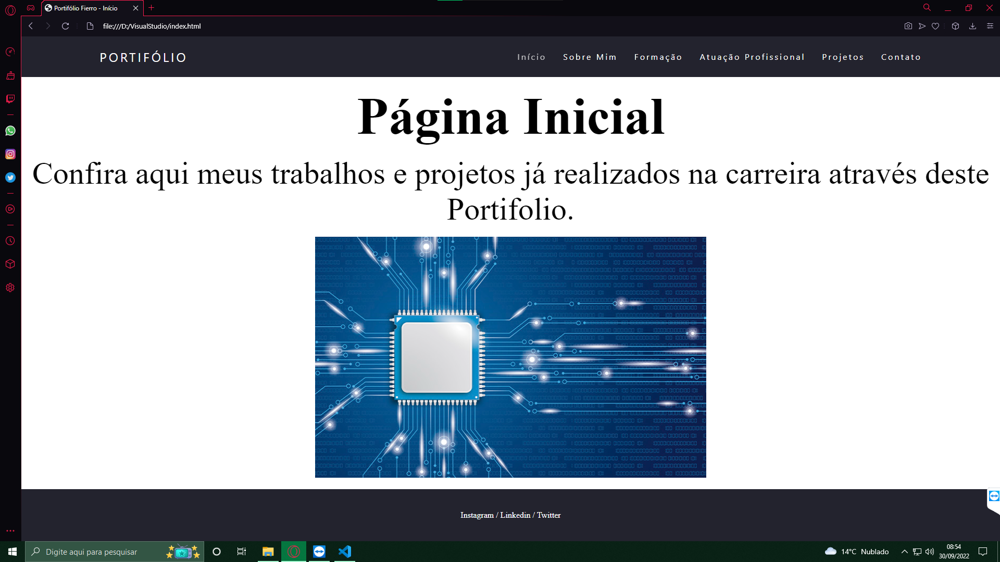
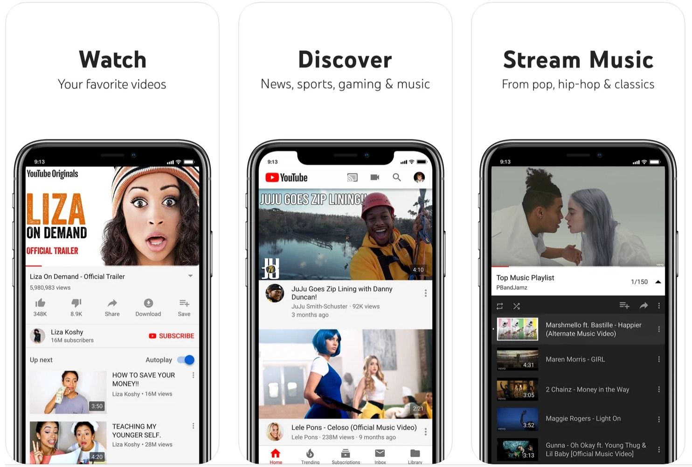
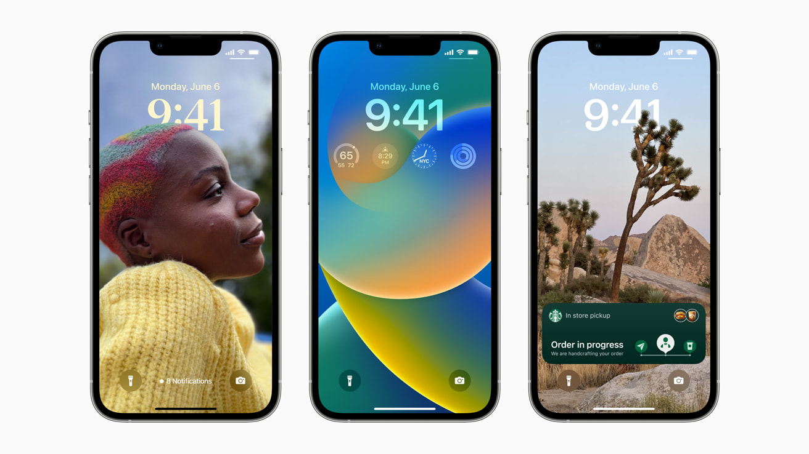

Saiba mais sobre HTML
Saiba mais sobre HTML
Meu Primeiro Projeto foi bem básico usando somente HTML em sua compilação para desemvolvimento. Trata-se de uma
página baseada no Fluminense Football Club.
Saiba mais sobre HTML
Meu Segundo Projeto foi esse site que vocês estão usando nesse momento, no seu desemvolvimento foi usado
HTML e
CSS. Trata-se de um Portifólio sobre minha carreira.

Saiba mais sobre HTML
Saiba mais sobre CSS
Meu Terceiro Projeto já foi pela Google, na programação e no desenvolvimento do Gmail para iOS, foram usados
o Swift e o C++.
 Saiba mais sobre Swift
Saiba mais sobre Swift
Meu Quarto Projeto já foi pela Google, na programação e no desenvolvimento do YouTube para iOS, foram usados o Swift e o C++.  Saiba mais sobre Swift
Meu Quinto Projeto já foi pela Apple, na programação e no desenvolvimento do iOS, foram usados
C++, Swift e Java, além outras menos usadas como C e Objective-C e aruqiterturas que não podem ser
reveladas por ser fechado.

Saiba mais sobre Swift
Saiba mais sobre C++
Saiba mais sobre Java